网格
除了液体粒子，液体网格是另一种可视化液体模拟的方式。它是由液体粒子直接生成的，并且经常使用比基本 分辨率分区 更高的分辨率。
除了启用部分界面外，检查 Mesh 可以让缓存知道要读取哪些模拟数据。例如，如果 Mesh 被启用，但没有网格模拟数据可读，它将显示原始领域。该复选框不会重置缓存，可以用来在原始领域和烘焙的液体网格之间切换视图。
重要的是要记住，网格的形状取决于 所有 这些参数的组合。例如，改变 粒子半径 将导致对凹度值的不同解释。
- Upres系数
用于提高网格分辨率的系数。缩放系数与 分辨率分区 相耦合（即网格比基本模拟大这倍）。
- 粒子半径
以网格单元为单位的一个液体粒子的半径。这个值描述了一个粒子所覆盖的面积，从而决定了它周围有多少区域可以被认为是液体。更大的半径会让粒子覆盖更多的区域。这将导致网格在液体粒子周围覆盖更多的体积。
这个属性指的是与液态域设置中描述的相同的粒子半径。然而对于网格来说，单独解释粒子半径是很有用的。首先，网格可以通过 Upres 系数 拥有一个不同于基本分辨率的分辨率。另外，通常希望能够控制单个液体粒子周围的网格大小。
- 使用速度矢量
If this checkbox is enabled, speed vectors (mesh vertex velocities) are generated and stored on drive. They can be used to compute image-based motion blur with the compositing nodes.
有和没有运动模糊的液体飞溅的比较（用Cycles渲染）。 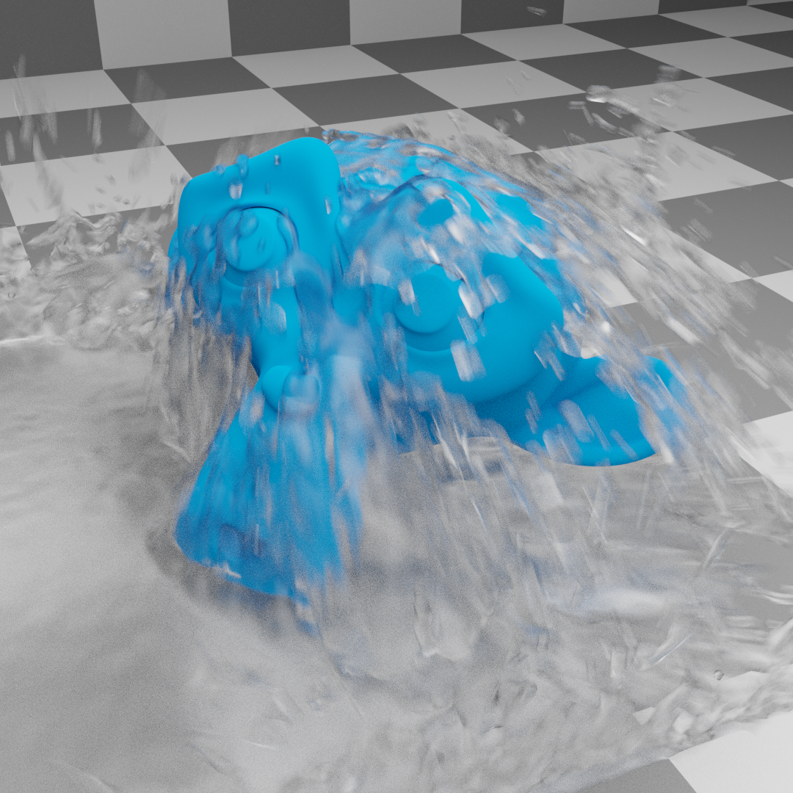 已启用运动模糊。
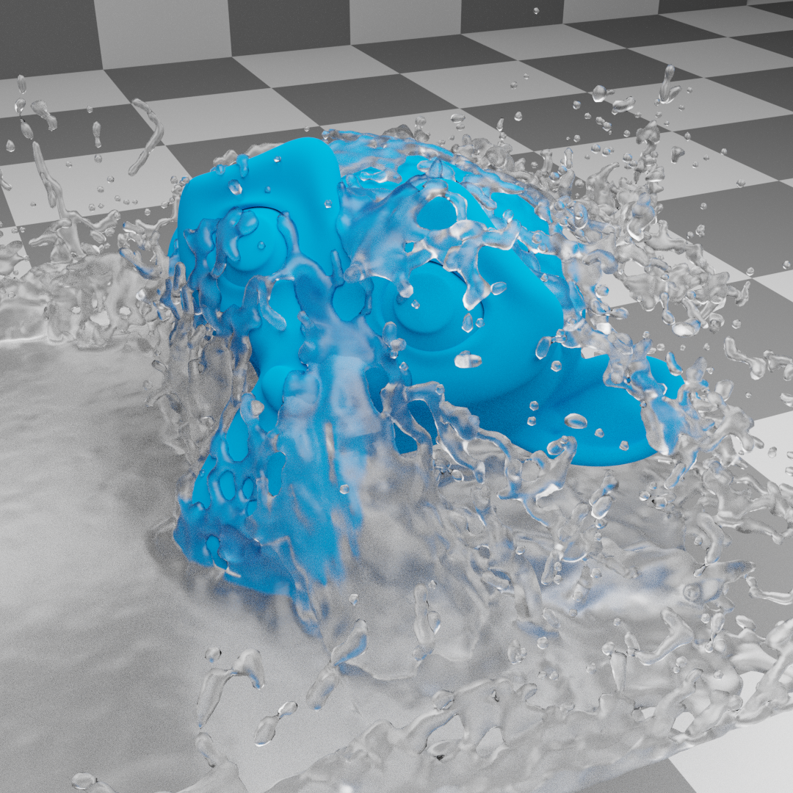 已禁用运动模糊。
- 网格生成器
网格生成器的方法决定了网格的精度。最终 选项产生的网格质量更高，并提供了更多的配置选项，而 预览*选项的速度更快，但没有那么平滑。
- 正向平滑
正的网格平滑迭代。更高的数值会使网格的轮廓越来越平滑。然而，较高的数值会阻止小的细节（例如较小的液滴）被网格化。
- 平滑负极
负的网格平滑迭代。较高的数值会使网格的轮廓更加清晰。高值会保留细节，但是，网格轮廓会变得更加粗糙（例如，单个网格粒子会变得不那么圆滑，有更多的平边）。
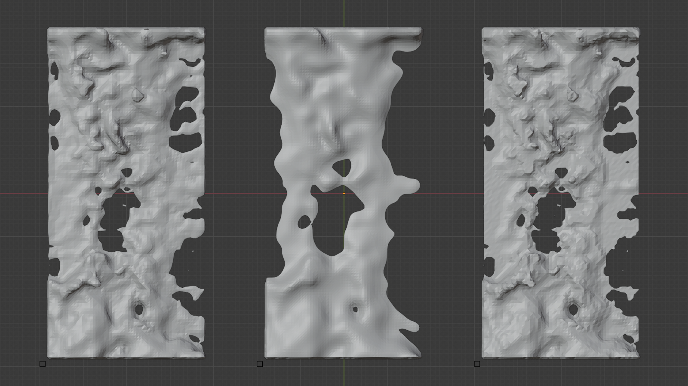 液滴撞击表面的比较（从上面看），不同的平滑值。左边：1，1（平滑度为正，平滑度为负）。中间：10，1。右边：1，10。请注意，右边的水花的角略微尖锐（与左边的相比）。
- 上界凹度
上部网格凹陷边界。高值往往会平滑和填充凹陷区域。
- 凹陷度较低
下部网格凹陷边界。高值往往会平滑和填充凹陷区域。
使用一个大于上层凹度的下层凹度会导致扭曲的、非流形的网格。除非艺术家看到这种网格的价值，否则应该避免这种凹度值的组合。
上、下凹度设置不同的皇冠飞溅。请注意，将凹度值设置为相同的值会产生一个非常细小的网格。 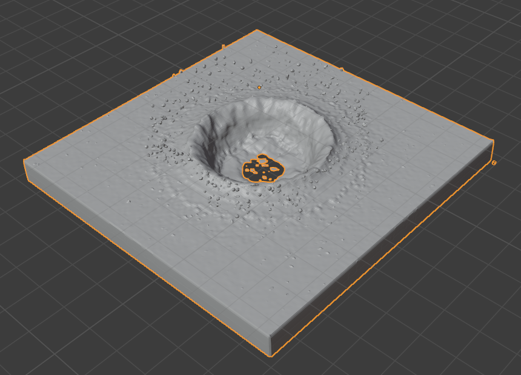 上限：1.0，下限：0.0。
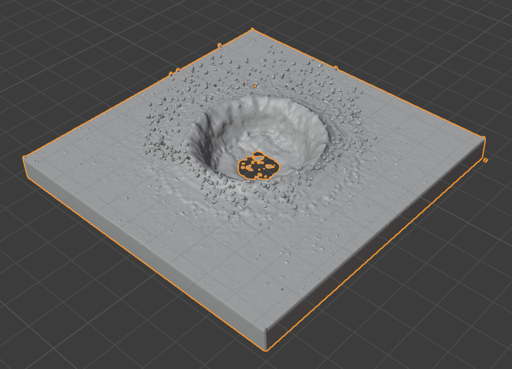 上限：1.0，下限：0.5。
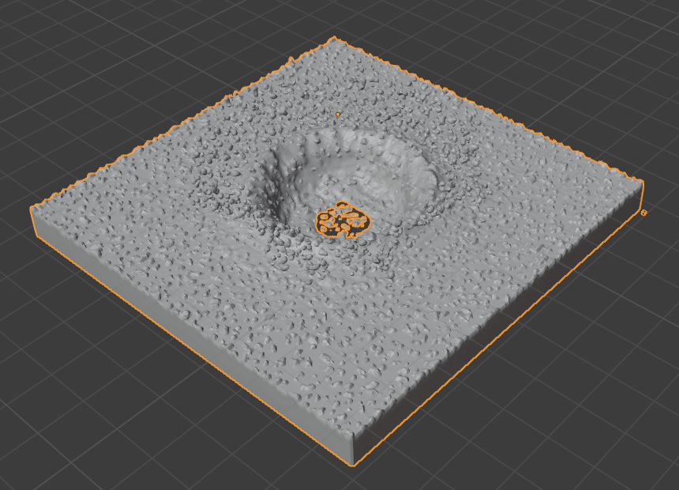 上限：1.0，下限：1.0。
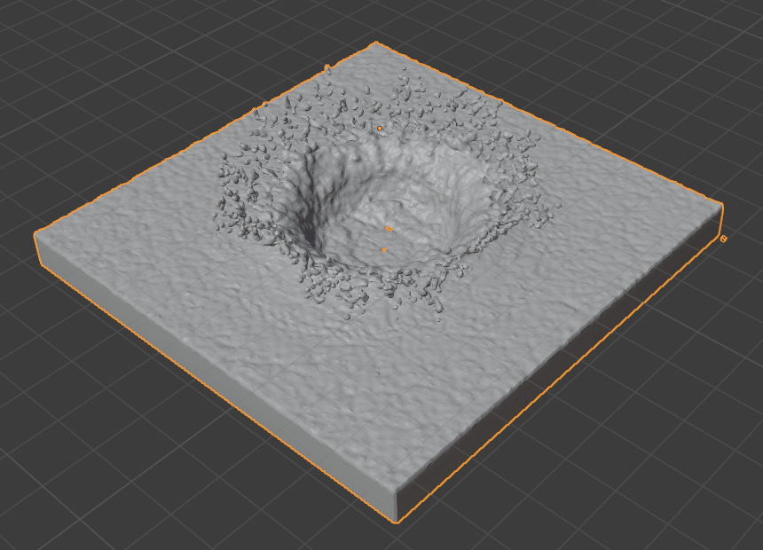 上限：1.5，下限：0.0。
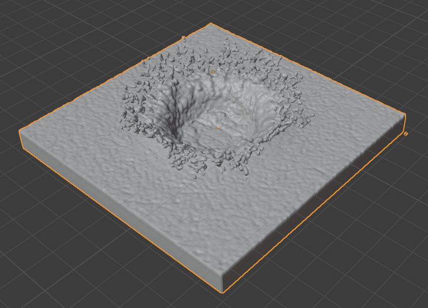 上限：1.5，下限：0.5。
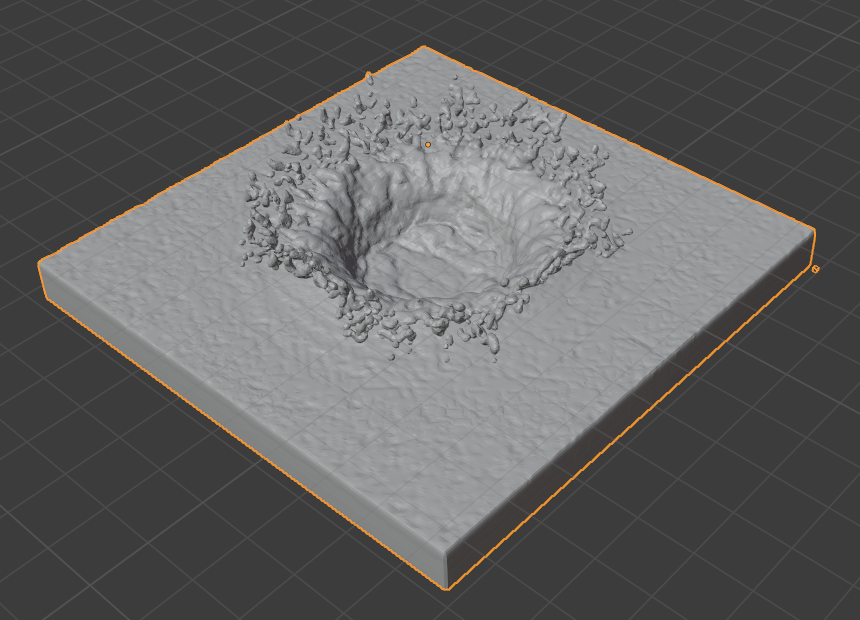 上限：1.5，下限：1.0。
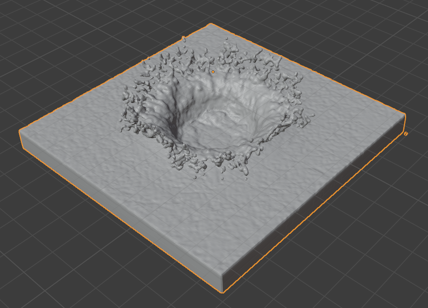 上限：2.0，下限：0.0。
上限：2.0，下限：0.5。
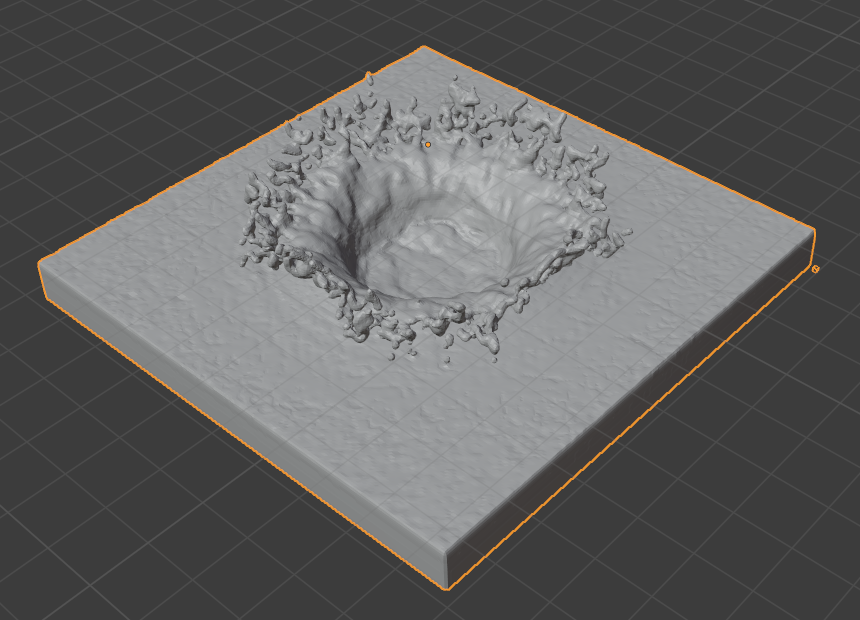 上限：2.0，下限：1.0。
- 烘焙网格，释放网格
这个选项只有在使用 Modular 缓存类型时可用。
进展将显示在状态栏中。按 Esc 将终止模拟。
一旦模拟完成，可以通过按 释放网格 删除缓存。可以暂停或恢复 烘焙网格 进程。